Reportes HTML desde la app — revisión antes del push
Batch 2026-10-29-batch-01 · rama feat/html-report · 2026-10-29 · sin push ni merge
1. Lo que decides aquí
- Controles de HR-3 (proyectos, estado, personas, clases, fechas, secciones, Reset, contador): ¿claros y rápidos?
- Las dos salidas de HR-4: ¿se entiende cuál deja fuera la información oculta? (solo la descarga; el PDF solo la oculta en papel, el HTML original la conserva).
- Carpeta de destino: los archivos caen en
reports\junto al board abierto. Con alcance o el archivo lleva todos los boards cargados. ¿Esas carpetas se comparten con clientes? (pregunta PU3 de la revisión de UX).
2. El workspace (variante B) con los controles nuevos
Todo el estado de los controles vive en el #hash de la URL: una vista configurada se puede guardar como marcador o reabrir. El contador dice «N filters active» y Reset vuelve a cero. Cada control es un elemento nativo alcanzable con Tab.
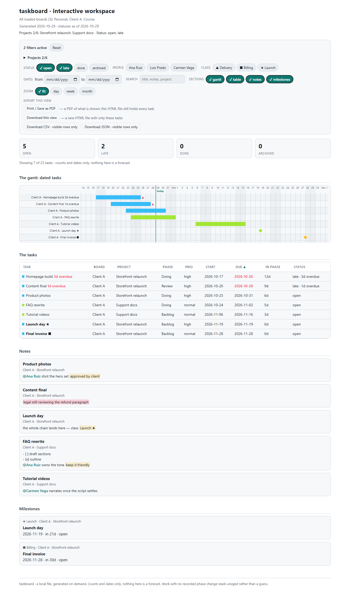
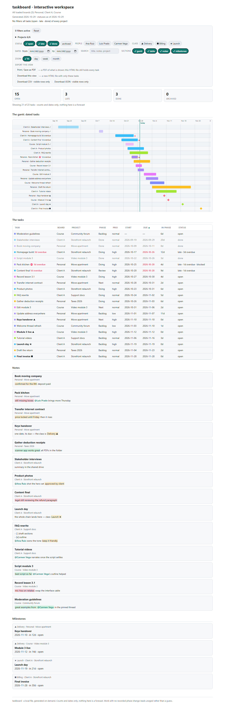
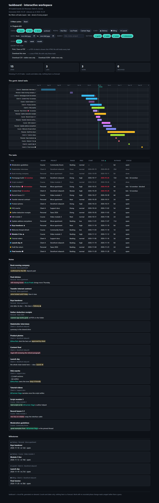
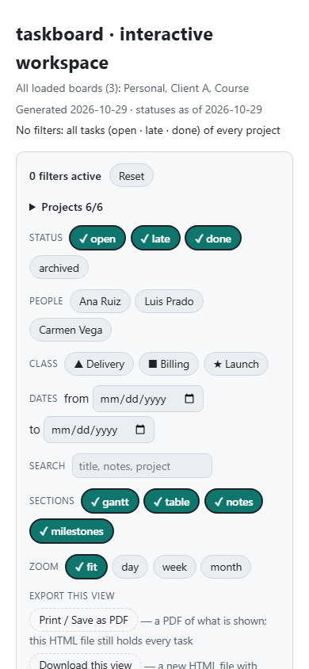
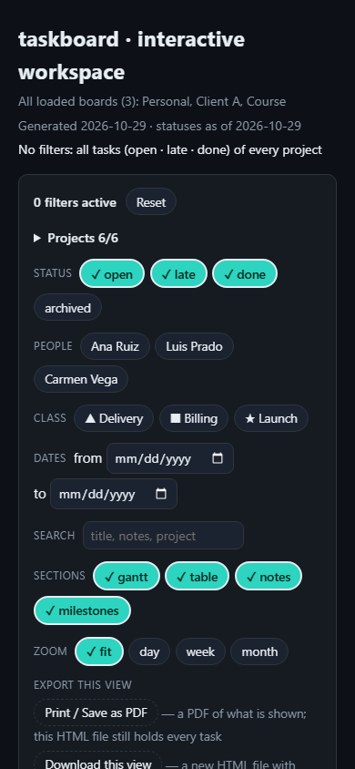
Archivos reales para abrir en tu navegador: workspace-2026-10-29.html · prueba esta vista: misma vista por hash.
3. Exportar la vista configurada (HR-4)
a) Print / Save as PDF
Imprime solo la vista: sin controles, con un encabezado que dice qué boards y proyectos se muestran, la fecha de generación y la de impresión. La revisión de diseño (DDR) encontró que el encabezado impreso nombraba boards ocultos y contaba «Projects 2/6», y que la tabla se cortaba: lo corrigió el incremento 005. Ojo: el PDF solo oculta en papel; el HTML original sigue teniendo todo.
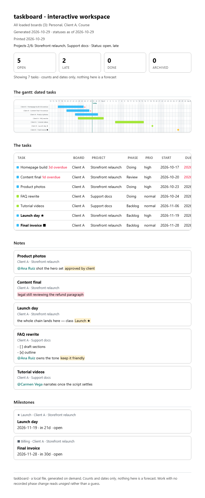
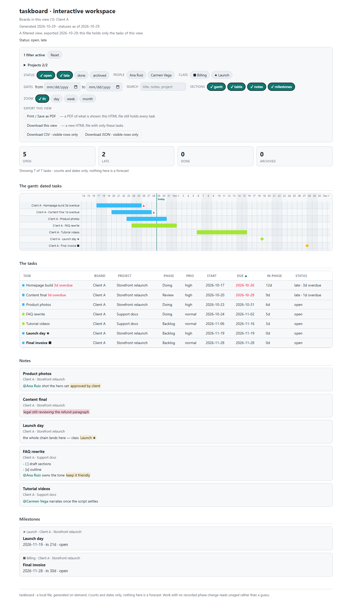
Archivos: PDF de la vista · HTML descargado de la vista. CSV y JSON dentro del workspace también exportan solo las filas visibles, con protección contra fórmulas de hoja de cálculo.
4. El deck (variante C)
Portada, panorama y una diapositiva por proyecto del alcance; flechas, PageUp/PageDown, Home/End; al imprimir, una diapositiva por página.
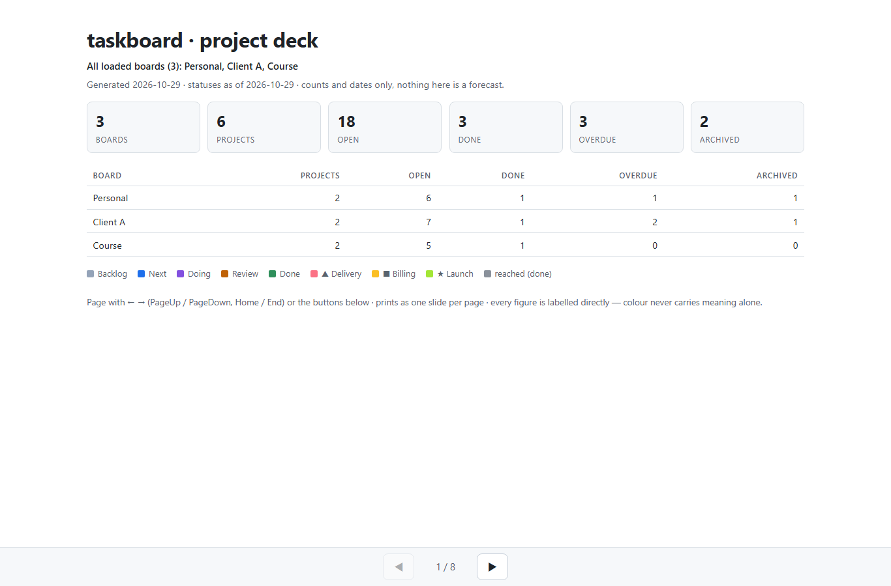
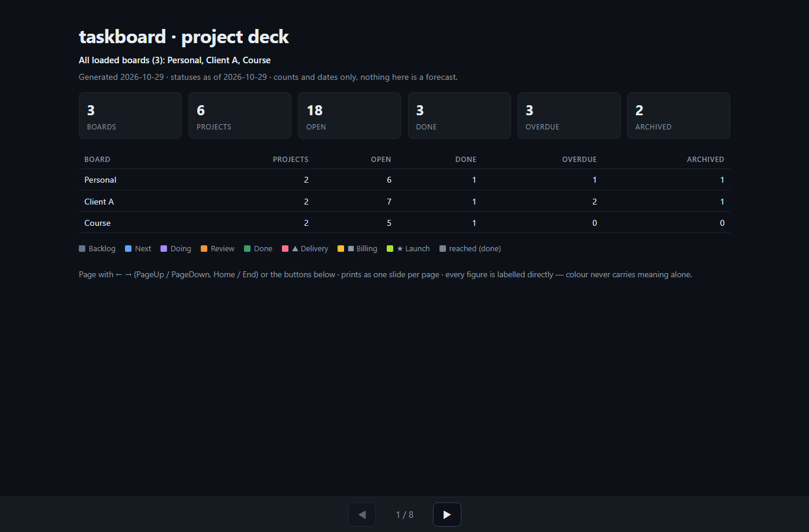
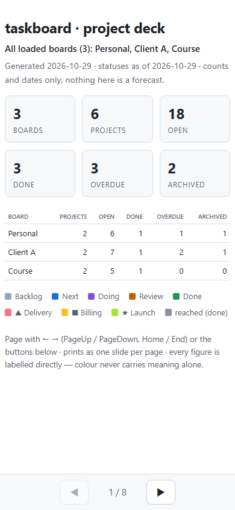
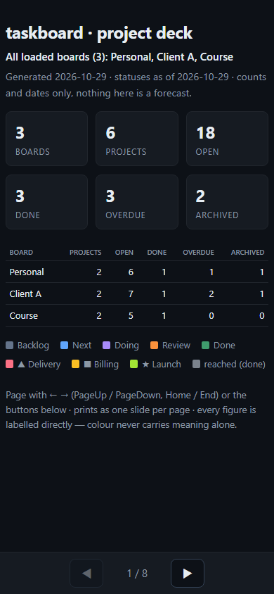
Archivos: deck-2026-10-29.html · deck.pdf (una página por diapositiva).
5. La tecla H en la app (Windows Terminal real, 118x30)
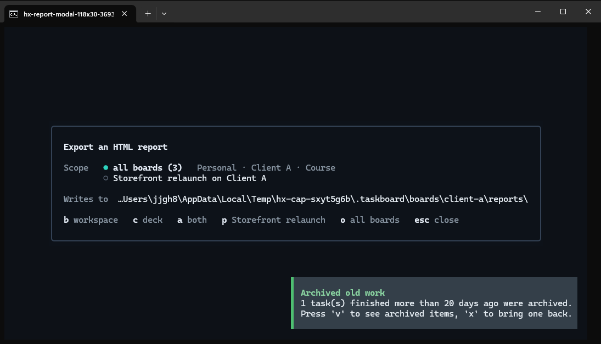
b workspace · c deck · a both · p <proyecto> · o all boards · esc close, carpeta de destino y nombres de boards.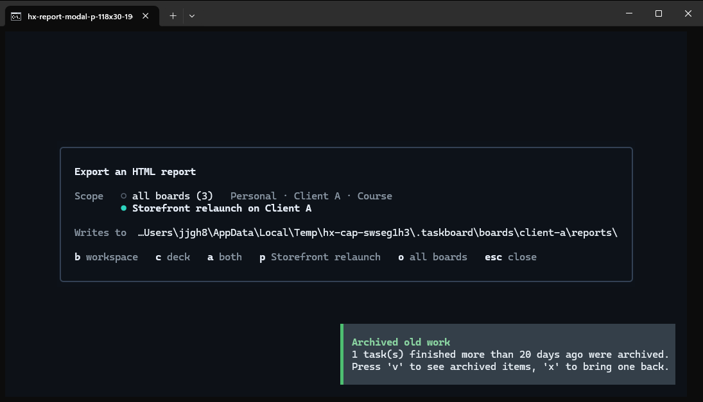
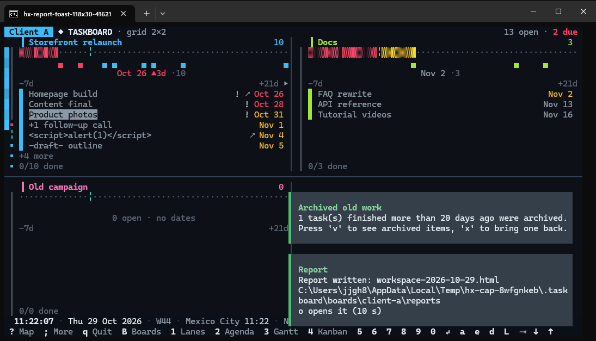
El export SVG/PNG de x dentro de R no cambió (conviven).
6. Decisiones que tomé (bajo tu autorización «decide cómo continuar»)
| Id | Decisión | Por qué |
|---|---|---|
| HR-1 | El reporte CLI taskboard --report se queda como está. | Es un documento de un solo board, sin JavaScript, con sus propias leyes probadas; sirve para scripts. Reemplazarlo cambiaría una salida ya publicada. El reporte nuevo reutiliza sus reglas de honestidad (palabras de vencimiento, «unaged»). Retirarlo o redirigirlo queda en BACKLOG para que lo decidas. |
| Una sola extracción | B y C se generan del mismo diccionario de datos. | No pueden contradecirse sobre los hechos del board. |
| Alcance por defecto | o todos los boards, como recomendó la ronda. | Riesgo aceptado y declarado: el modal muestra carpeta y boards antes de escribir; el encabezado del archivo dice el alcance. |
| Trabajo terminado | Una tarea hecha o archivada nunca dice «overdue» (muestra la distancia simple, p. ej. -30d). | Lo terminado no está atrasado. |
| Notas apagadas | Si la sección de notas está apagada, la descarga quita también las menciones (salvo filtro de persona activo). | Las menciones salen del texto de las notas retenidas. |
| Enlaces | Solo http/https; todo texto del board escapado. | El archivo del board se trata como no confiable (hallazgo HIGH de seguridad, cerrado y verificado). |
7. Tu veredicto
8. Evidencia (para auditoría)
Suite completa en 3 bloques secuenciales, mutaciones por incremento, revisores independientes (arquitecto, código, seguridad, QA, UX) y el validador del flujo: ver 04-validation.md, 05-close.md, PLAN.md y los paquetes en 03-increments/. Datos sintéticos únicamente.